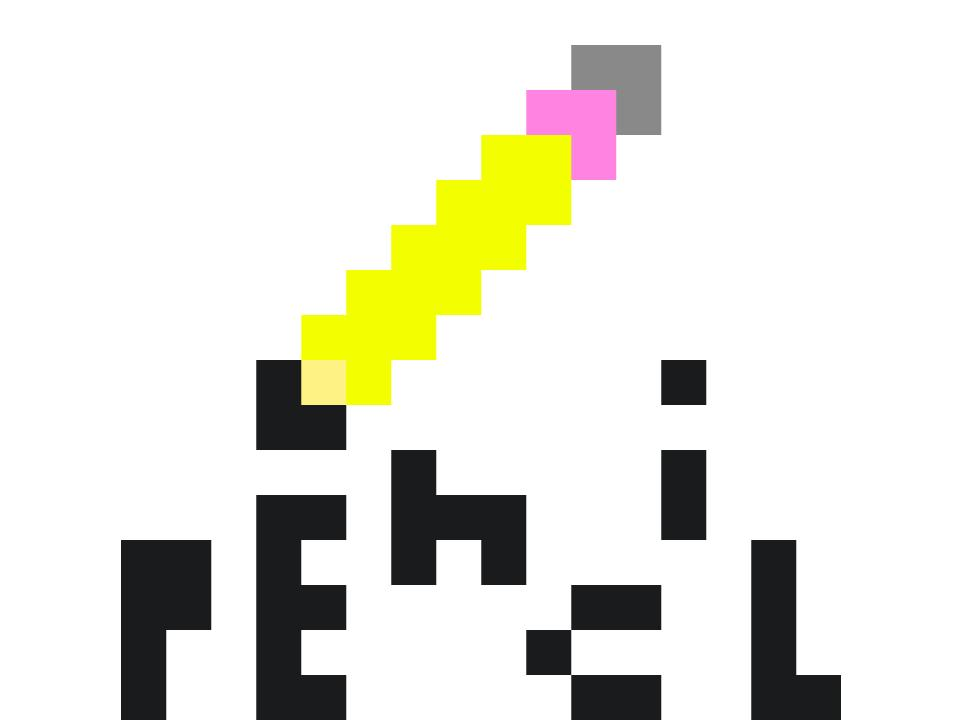

- 

Pencil Publishers was founded by fisik_yum and United Geekdom in 2017, as the successor of Pencil Comix,
and several preceding comic companies. It was brought to the net in 2019. Our mission is to spread absolutely dumb literature to the masses, freeing them from the oppression of real
literature. We are the home of several comics and other comedic literature, such as The Witches 2 and The (Il)logical Book of (Non)sense.